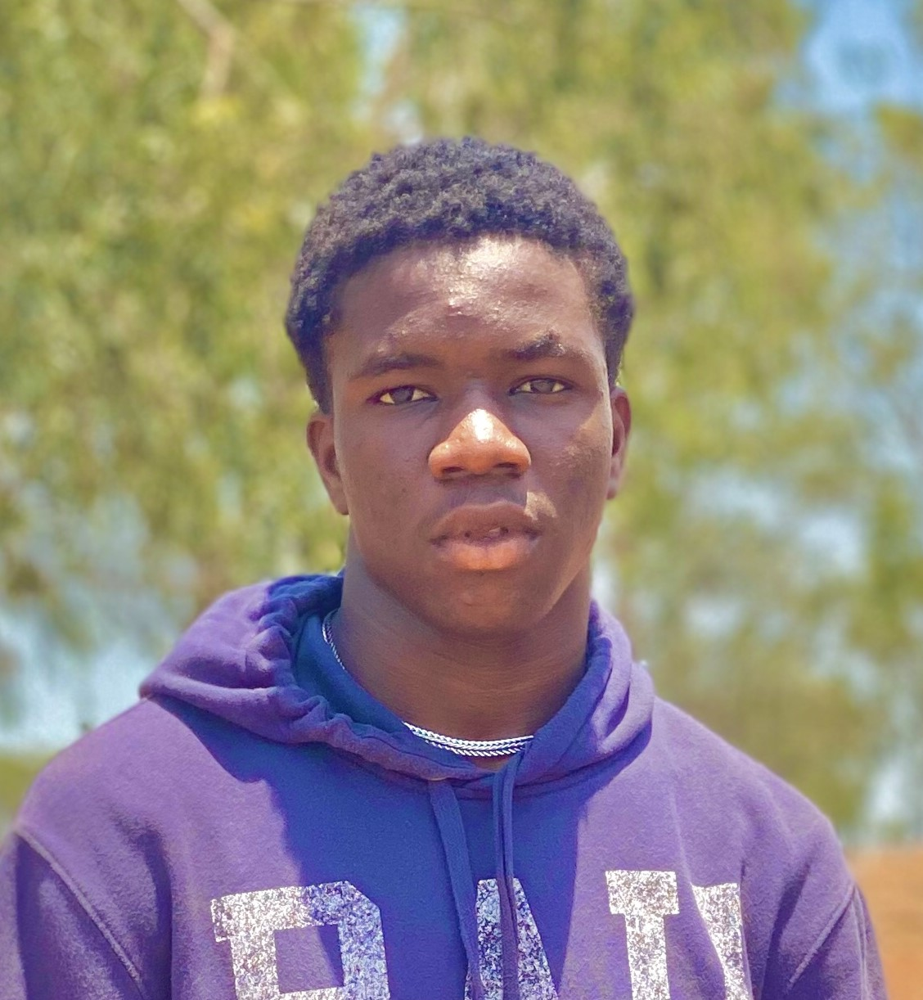

Obiekwe Chinedu Michael

Adress: No 2 Gaidam Close,Ile Ife Street,Garki,Abuja
Email: Michaelobiekwe52@gmail.com
Phone No: +2349169892538
Professional Summary
A highly motivated and results-driven Computer Engineering graduate with a passion for technology and problem-solving. Skilled in various programming languages, software development, and hardware design. Seeking to leverage my skills in software development to contribute to any company and continue developing my expertise in the field of Computer Engineering.
Education
Bachelor of Science in Computer Engineering
Caritas University, Enugu.
[OCT/2018] – [AUG/2023]
- Relevant Coursework: Data Structures, Digital Circuits, Microprocessors, Algorithms, Software Engineering, Networking, Embedded Systems
Work Experience
Software Developer
Interswitch Nigeria, Lagos, Nigeria
[June, 2024 ] – Present
- Developed and maintained software solutions that improved transaction processing systems, ensuring high performance and reliability.
- Collaborated with cross-functional teams to create integrated solutions that enhanced user experience and system capabilities.
Technical Support Engineer
[Federal Mortgage Bank Of Nigeria], [Abuja, Nigeria]
[Nov,2024] – [Present]
- Provided on-site and remote support to customers for troubleshooting and resolving hardware and software issues.
- Worked closely with the engineering team to identify and address recurring system failures and implemented solutions to prevent future occurrences.
- Assisted in the configuration and setup of computer hardware and networks for corporate clients.
Skills
- Website Development: HTML, CSS, JavaScript,WordPress, React, Bootstrap
- Programming Languages: C, C++, Java, Python
- Hardware Design & Troubleshooting: Digital Circuit Design, Microcontrollers
- Network Administration: TCP/IP, LAN/WAN, Routers and Switches
- Problem Solving & Analytical Thinking
- Project Management: Team Collaboration, Deadline Management
Awards, Certifications, and Achievements
- Certified Network Associate (CCNA) – Cisco, [2024]
- First Place in the [specific competition or hackathon], Caritas University, [2022]
- Best Project Award – Final Year Project, Caritas University, [2023]
Others
My Hobbies
Contact Me